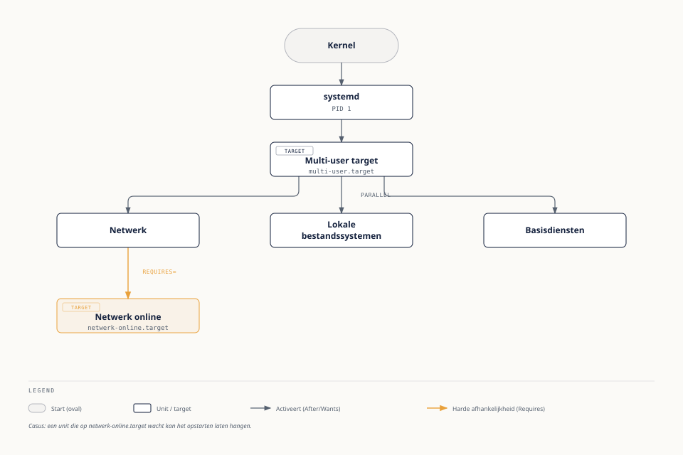

Wat is systemd?
⏱ 12 minsystemd is op vrijwel elke moderne Linux-distributie — waaronder Ubuntu — het eerste proces dat de kernel start (PID 1) en het systeem dat vervolgens alle andere processen, diensten en mountpoints beheert. Waar oudere systemen (SysV init) diensten sequentieel starten via genummerde shellscripts, start systemd diensten parallel waar mogelijk, op basis van expliciete afhankelijkheden tussen units.
Een unit is de generieke naam voor alles wat systemd beheert: een dienst (.service), een mountpoint (.mount), een timer (.timer, alternatief voor cron — zie deel 22), een socket (.socket), of een groepering van andere units (.target).
De boot-flow, vereenvoudigd
- De kernel laadt en start het init-proces, systemd, als PID 1.
- Systemd activeert het standaard-target — op een servermachine doorgaans
multi-user.target(opstarten zonder grafische omgeving). - Dat target heeft zelf afhankelijkheden naar andere targets en units (netwerk, lokale bestandssystemen, basisdiensten), die systemd in de juiste volgorde en waar mogelijk parallel start.
- Individuele
.service-units starten zodra hun eigen afhankelijkheden (After=,Requires=) vervuld zijn.

Fenna legt Milan uit waarom een server soms "blijft hangen" bij het opstarten: een unit met een harde afhankelijkheid (Requires=netwerk-online.target) wacht op een dienst die zelf niet start. Met systemctl list-jobs tijdens het opstarten (of systemd-analyze blame na het opstarten) is precies te zien welke unit de vertraging veroorzaakt.